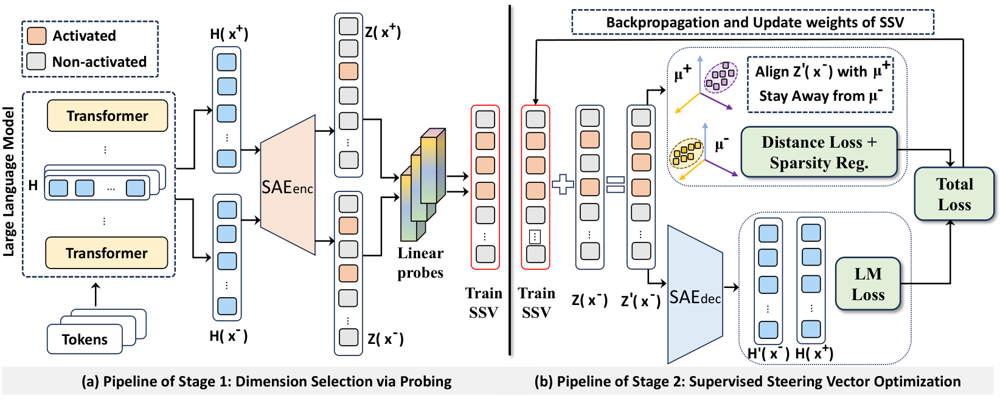

SAE-SSV: Supervised Steering in Sparse Representation Spaces
for Reliable Control of Language Models
1 New Jersey Institute of Technology, 2 Rutgers University, 3 Cisco
[Paper] [Code] [ACL Anthology] [arXiv]

Overview
Steering changes a language model’s internal activations to guide its output without retraining the model. SAE-SSV performs this intervention in a sparse autoencoder (SAE) representation space. It aims to identify a small set of dimensions that are relevant to a target behavior, then use those dimensions to control open-ended generation.
The method encodes activations into SAE features and uses supervised linear probes to rank task-relevant dimensions. A steering vector is initialized from positive and negative examples and optimized only within the selected subspace. Its training objective encourages the desired behavior while preserving generation quality and keeping the intervention sparse. The paper evaluates sentiment, political polarity, and truthfulness steering on Llama-3.1-8B and Gemma-2 models.
Results
Table 1 compares steering success rates with four baselines across three models and three tasks. SAE-SSV achieves the highest reported success rate in each model–task setting. The full paper also reports lexical diversity and entropy changes to assess generation quality.
| Model | Method | Sentiment ↑ | Politics ↑ | Truthfulness ↑ |
|---|---|---|---|---|
| Llama-3.1-8B | CAA | 45.6 | 43.7 | 28.7 |
| Llama-3.1-8B | RePe | 24.7 | 26.2 | 16.2 |
| Llama-3.1-8B | Top PC | 28.4 | 24.3 | 14.9 |
| Llama-3.1-8B | ITI | 41.1 | 45.2 | 31.2 |
| Llama-3.1-8B | SAE-SSV | 63.2 | 60.5 | 34.1 |
| Gemma-2-2B | CAA | 39.6 | 45.4 | 24.6 |
| Gemma-2-2B | RePe | 27.2 | 36.6 | 11.6 |
| Gemma-2-2B | Top PC | 23.8 | 35.0 | 12.2 |
| Gemma-2-2B | ITI | 41.2 | 42.1 | 22.3 |
| Gemma-2-2B | SAE-SSV | 52.8 | 61.3 | 31.7 |
| Gemma-2-9B | CAA | 42.3 | 39.3 | 19.8 |
| Gemma-2-9B | RePe | 19.7 | 22.4 | 9.2 |
| Gemma-2-9B | Top PC | 21.4 | 29.1 | 10.6 |
| Gemma-2-9B | ITI | 41.2 | 33.8 | 21.4 |
| Gemma-2-9B | SAE-SSV | 48.5 | 55.0 | 27.2 |
Interpretable Steering Features
Table 2 lists the ten SAE features with the largest learned weights in the sentiment steering vector for Llama-3.1-8B. Feature descriptions come from Neuronpedia; positive and negative values indicate the direction of each learned steering weight.
| Rank | Feature explanation | SAE feature # | Weight |
|---|---|---|---|
| 1 | Negative sentiments towards characters in movies | 2305 | −6.76 |
| 2 | Negative sentiments and criticisms related to performance or quality | 14086 | −3.24 |
| 3 | Phrases related to notable achievements in the entertainment industry | 12322 | 2.79 |
| 4 | Punctuation and symbols indicative of structural elements in text | 20767 | 2.32 |
| 5 | Mentions of achievements and recognition in a professional context | 28857 | 1.99 |
| 6 | Phrases and terminology related to legal injunctions and restrictions | 2268 | −1.89 |
| 7 | Components related to specific abilities or skills in performance | 29039 | −1.86 |
| 8 | References to historical or legendary figures and events | 28858 | −1.68 |
| 9 | Phrases indicating misinformation, contradictions, or inaccuracies | 14391 | −1.46 |
| 10 | Questions and expressions of disappointment or concern | 13758 | −1.43 |
BibTeX
@inproceedings{he-etal-2025-sae,
title = {{SAE}-{SSV}: Supervised Steering in Sparse Representation Spaces for Reliable Control of Language Models},
author = {He, Zirui and Jin, Mingyu and Shen, Bo and Payani, Ali and Zhang, Yongfeng and Du, Mengnan},
booktitle = {Proceedings of the 2025 Conference on Empirical Methods in Natural Language Processing},
pages = {2207--2236},
year = {2025},
publisher = {Association for Computational Linguistics},
doi = {10.18653/v1/2025.emnlp-main.112},
url = {https://aclanthology.org/2025.emnlp-main.112/}
}